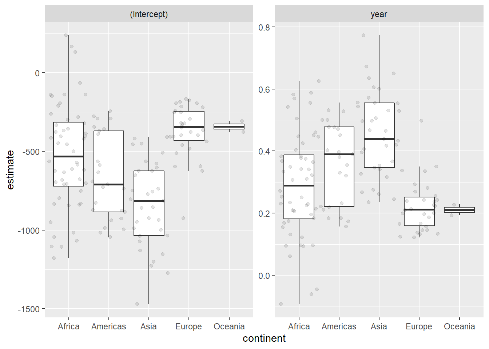
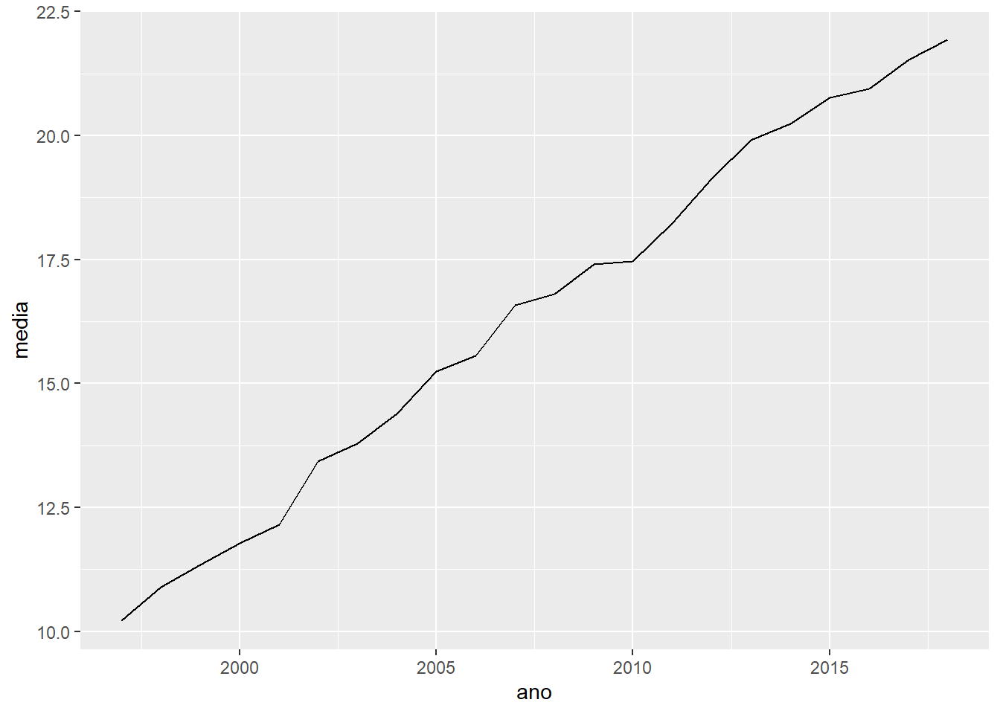
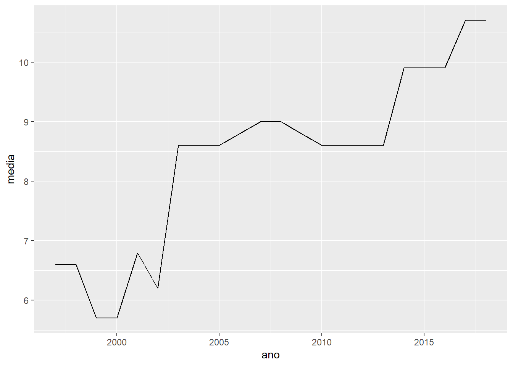
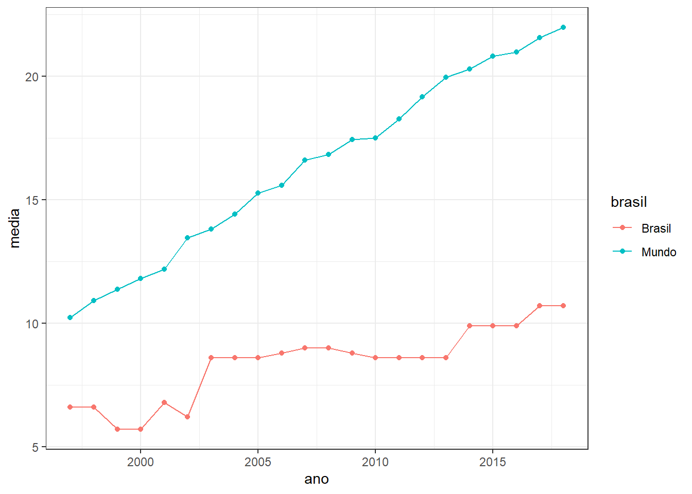

Iteração
Existe uma máxima muito interessante entre programadores que diz:
Don’t Repeat Yourself (DRY)
Humanos são extremamente distraídos e cometem muitos erros quando fazer operações repetitivas. Quando estamos programando, não é diferente. As vezes parece mais fácil copiar e colar uma estrutura de código para alterar apenas um detalhe e ter o resultado que se espera. Mas quando o numero de repetições começa a aumentar a chance de fazermos algo errado cresce junto.
No R, esse tipo de problema é resolvido de duas formas: com funções customizadas ou com loops. Nesse modulo vamos falar apenas de loops, mas com certeza ele já vai resolver muitos dos nossos problemas de repetição.
Como exemplo para esse tema, temos um planilha com os dados separados em abas e temos de juntar todos eles para iniciar a análise. Os dados estão na planilha base_vespa1.xlsx e em seguida vamos fazer essa junção de 3 formas diferentes.
library(tidyverse)
library(readxl)
library(broom)
aba1 <- read_excel("input/base_vespa1.xlsx", sheet = 1)
aba2 <- read_excel("input/base_vespa1.xlsx", sheet = 2)
aba3 <- read_excel("input/base_vespa1.xlsx", sheet = 3)
aba4 <- read_excel("input/base_vespa1.xlsx", sheet = 4)
aba5 <- read_excel("input/base_vespa1.xlsx", sheet = 5)
base_mobral <- bind_rows(aba1, aba2, aba3, aba4, aba5)
base_mobralbase_loop_out <- list()
for (i in 1:5) {
base_loop_out[[i]] <- read_excel("input/base_vespa1.xlsx", sheet = i)
}
base_loop <- bind_rows(base_loop_out)
base_loopbase_purrr <- excel_sheets("input/base_vespa1.xlsx") %>%
map_df(read_excel, path = "input/base_vespa1.xlsx")
base_purrrEstes 3 métodos exemplificam bastante a relação entre domínio da programação e quantidade de trabalhado apenas pelo computador. No primeiro exemplo tivermos que repetir várias vezes a estrutura do código para poder chegar no resultado esperado. No segundo, já fomos um pouco mais diretos e deixamos o trabalho repetitivo para o computador. Imagina se tivéssemos 30 abas para juntar? E se fossem 500 arquivos? O terceiro exemplo é um passo além de loops e em linguagem de programação chama-se functional programming, onde funções são usadas para realizar as operações que envolvem loops.
For loop
Loops são bem comuns em linguagem de programação e nos ajudam muito nas tarefas repetitivas. Eles são compostos de 3 partes:
- O output, estrutura que será populada em cada iteração. Pode ser um vetor, lista ou data frame.
- Uma sequência, o universo de possibilidades que será executada em cada iteração ou passo. É comum chamarmos de
i, mas pode ser qualquer denominação e no código é como se fosse um objeto que a cada iteração muda de conteúdo. - O corpo, parte que faz o calculo ou operação envolvendo os passos
ie guardando nooutput.
Retomando o loop que fizemos para ler as abas, temos os 3 componentes bem claros. Vamos rescreve os loop seguindo algumas boas práticas.
Programação funcional
A outra forma de realizar tarefas repetitivas em R é utilizando funções que foram desenhadas para trabalhar com iteração. O pacote do tidyverse que reúne estas funções chame-se purrr. A ideia das funções do purrr é desenhar as iterações sobre vetores, listas ou linhas de um data frame.
map(c(1, 2, 3, 4), rnorm)
map_dbl(mtcars, mean)
map_int(iris, function(x) length(unique(x)))
map_int(iris, ~ length(unique(.)))O pacote tem várias funções e você pode ler sobre elas com mais calma depois. Neste bloco, utilizar a programação funcional para ajustar regressões especificas para um determinado grupo e sempre mantendo tudo amarado a data frames. Esse é uma concepção de programação bastante nova no R, onde coloca o data frame como esqueleto principal da análise e aplicando todas as etapas dentro dele.
Nosso objetivo é ajustar um modelo hipsométrico (diâmetro-altura) para cada espécie e em seguida predizer as alturas das árvores. O gráfico a seguir mostra a relação que teríamos se fosse ajustado apenas um modelo para todas as espécies.
Mas na prática, a relação diâmetro-altura é diferente entre as espécies, como pode ser notado logo abaixo. Talvez fique mais evidente a diferença observando os coeficientes dos modelos que serão ajustados a seguir.
Para entendermos o processo, vamos ajustar a regressão para algumas espécies. O comando lm() utiliza a notação em formula para especificar o modelo. Lê-se H_m em função de CAP_cm, sendo o ~ responsável por determinar as variáveis dependentes e independentes.
O pacote broom tem algumas funções que facilitam a extração das informações do modelo ajustado. Iremos utilizar a função glance para pegar as estatísticas gerais do modelo e a função tidy para acessar os coeficientes e significâncias.
A primeira etapa é entender que um data.frame pode conter vários tipos de elementos, como números, caracteres, listas e também outros data.frames. Para isso utilizaremos a função nest() do pacote tidyr e aninharemos os dados em função das espécies.
Agora podemos ajustar um modelo de regressão para cada espécie utilizando a função map, do pacote purrr.
dados_modl <- inv_nest %>%
mutate(
ajuste = map(data, ~lm(H_m ~ CAP_cm, data = .)),
resumo = map(ajuste, glance),
coef = map(ajuste, tidy),
resid = map(ajuste, augment)
)
dados_modlDa mesma forma que aninhamos os dados por espécie, podemos retorná-los para o formato original, mas agora mostrando apenas as informações que realmente interessam.
Após o ajuste do modelo, temos de predizer as alturas. Por fim, temos de volta um data.frame com as alturas preditas.
dados_pred <- dados_modl %>%
mutate(
hpred = map2(ajuste, data, predict)
) %>%
select(Esp, data, hpred) %>%
unnest(hpred, data)
dados_predPara visualizar o resultado da regressão, podemos colocar no gráfico a comparação entre valores medidos e preditos.
Exercícios
- A partir do data frame
gapmindercrie o objetogap_nestedcom os dados aninhados em função decontinentecountry.
Dica: nest.
#> # A tibble: 142 x 3
#> continent country data
#> <fct> <fct> <list>
#> 1 Asia Afghanistan <tibble [12 x 4]>
#> 2 Europe Albania <tibble [12 x 4]>
#> 3 Africa Algeria <tibble [12 x 4]>
#> 4 Africa Angola <tibble [12 x 4]>
#> 5 Americas Argentina <tibble [12 x 4]>
#> 6 Oceania Australia <tibble [12 x 4]>
#> 7 Europe Austria <tibble [12 x 4]>
#> 8 Asia Bahrain <tibble [12 x 4]>
#> 9 Asia Bangladesh <tibble [12 x 4]>
#> 10 Europe Belgium <tibble [12 x 4]>
#> # ... with 132 more rows- Com o objeto
gap_nestedajuste um modelo linear com a formulalifeExp ~ yeare calcule as estatísticas do modelos ajustados
Dica: map, lm, tidy.
#> # A tibble: 142 x 5
#> continent country data fit tidy
#> <fct> <fct> <list> <list> <list>
#> 1 Asia Afghanistan <tibble [12 x 4]> <lm> <tibble [2 x 5]>
#> 2 Europe Albania <tibble [12 x 4]> <lm> <tibble [2 x 5]>
#> 3 Africa Algeria <tibble [12 x 4]> <lm> <tibble [2 x 5]>
#> 4 Africa Angola <tibble [12 x 4]> <lm> <tibble [2 x 5]>
#> 5 Americas Argentina <tibble [12 x 4]> <lm> <tibble [2 x 5]>
#> 6 Oceania Australia <tibble [12 x 4]> <lm> <tibble [2 x 5]>
#> 7 Europe Austria <tibble [12 x 4]> <lm> <tibble [2 x 5]>
#> 8 Asia Bahrain <tibble [12 x 4]> <lm> <tibble [2 x 5]>
#> 9 Asia Bangladesh <tibble [12 x 4]> <lm> <tibble [2 x 5]>
#> 10 Europe Belgium <tibble [12 x 4]> <lm> <tibble [2 x 5]>
#> # ... with 132 more rows- Salve no objeto
gap_coefo desaninhe os dados.
Dica: unnest.
#> # A tibble: 284 x 7
#> continent country term estimate std.error statistic p.value
#> <fct> <fct> <chr> <dbl> <dbl> <dbl> <dbl>
#> 1 Asia Afghanistan (Intercept) -508. 40.5 -12.5 1.93e- 7
#> 2 Asia Afghanistan year 0.275 0.0205 13.5 9.84e- 8
#> 3 Europe Albania (Intercept) -594. 65.7 -9.05 3.94e- 6
#> 4 Europe Albania year 0.335 0.0332 10.1 1.46e- 6
#> 5 Africa Algeria (Intercept) -1068. 43.8 -24.4 3.07e-10
#> 6 Africa Algeria year 0.569 0.0221 25.7 1.81e-10
#> 7 Africa Angola (Intercept) -377. 46.6 -8.08 1.08e- 5
#> 8 Africa Angola year 0.209 0.0235 8.90 4.59e- 6
#> 9 Americas Argentina (Intercept) -390. 9.68 -40.3 2.14e-12
#> 10 Americas Argentina year 0.232 0.00489 47.4 4.22e-13
#> # ... with 274 more rows- Faça um gráfico mostrando a variação dos parâmetros ajustados por Continente.
Dicas: geom_jitter, facet_wrap(…, scales = “free_y”).

- Importe o arquivo woman.xls e salve num objeto chamado
woman.
Dicas: ?read_excel, skip.
#> Observations: 264
#> Variables: 63
#> $ `Country Name` <chr> "Aruba", "Afghanistan", "Angola", "Albania", ...
#> $ `Country Code` <chr> "ABW", "AFG", "AGO", "ALB", "AND", "ARB", "AR...
#> $ `Indicator Name` <chr> "Proportion of seats held by women in nationa...
#> $ `Indicator Code` <chr> "SG.GEN.PARL.ZS", "SG.GEN.PARL.ZS", "SG.GEN.P...
#> $ `1960` <lgl> NA, NA, NA, NA, NA, NA, NA, NA, NA, NA, NA, N...
#> $ `1961` <lgl> NA, NA, NA, NA, NA, NA, NA, NA, NA, NA, NA, N...
#> $ `1962` <lgl> NA, NA, NA, NA, NA, NA, NA, NA, NA, NA, NA, N...
#> $ `1963` <lgl> NA, NA, NA, NA, NA, NA, NA, NA, NA, NA, NA, N...
#> $ `1964` <lgl> NA, NA, NA, NA, NA, NA, NA, NA, NA, NA, NA, N...
#> $ `1965` <lgl> NA, NA, NA, NA, NA, NA, NA, NA, NA, NA, NA, N...
#> $ `1966` <lgl> NA, NA, NA, NA, NA, NA, NA, NA, NA, NA, NA, N...
#> $ `1967` <lgl> NA, NA, NA, NA, NA, NA, NA, NA, NA, NA, NA, N...
#> $ `1968` <lgl> NA, NA, NA, NA, NA, NA, NA, NA, NA, NA, NA, N...
#> $ `1969` <lgl> NA, NA, NA, NA, NA, NA, NA, NA, NA, NA, NA, N...
#> $ `1970` <lgl> NA, NA, NA, NA, NA, NA, NA, NA, NA, NA, NA, N...
#> $ `1971` <lgl> NA, NA, NA, NA, NA, NA, NA, NA, NA, NA, NA, N...
#> $ `1972` <lgl> NA, NA, NA, NA, NA, NA, NA, NA, NA, NA, NA, N...
#> $ `1973` <lgl> NA, NA, NA, NA, NA, NA, NA, NA, NA, NA, NA, N...
#> $ `1974` <lgl> NA, NA, NA, NA, NA, NA, NA, NA, NA, NA, NA, N...
#> $ `1975` <lgl> NA, NA, NA, NA, NA, NA, NA, NA, NA, NA, NA, N...
#> $ `1976` <lgl> NA, NA, NA, NA, NA, NA, NA, NA, NA, NA, NA, N...
#> $ `1977` <lgl> NA, NA, NA, NA, NA, NA, NA, NA, NA, NA, NA, N...
#> $ `1978` <lgl> NA, NA, NA, NA, NA, NA, NA, NA, NA, NA, NA, N...
#> $ `1979` <lgl> NA, NA, NA, NA, NA, NA, NA, NA, NA, NA, NA, N...
#> $ `1980` <lgl> NA, NA, NA, NA, NA, NA, NA, NA, NA, NA, NA, N...
#> $ `1981` <lgl> NA, NA, NA, NA, NA, NA, NA, NA, NA, NA, NA, N...
#> $ `1982` <lgl> NA, NA, NA, NA, NA, NA, NA, NA, NA, NA, NA, N...
#> $ `1983` <lgl> NA, NA, NA, NA, NA, NA, NA, NA, NA, NA, NA, N...
#> $ `1984` <lgl> NA, NA, NA, NA, NA, NA, NA, NA, NA, NA, NA, N...
#> $ `1985` <lgl> NA, NA, NA, NA, NA, NA, NA, NA, NA, NA, NA, N...
#> $ `1986` <lgl> NA, NA, NA, NA, NA, NA, NA, NA, NA, NA, NA, N...
#> $ `1987` <lgl> NA, NA, NA, NA, NA, NA, NA, NA, NA, NA, NA, N...
#> $ `1988` <lgl> NA, NA, NA, NA, NA, NA, NA, NA, NA, NA, NA, N...
#> $ `1989` <lgl> NA, NA, NA, NA, NA, NA, NA, NA, NA, NA, NA, N...
#> $ `1990` <dbl> NA, 3.700000, 14.500000, 28.800000, NA, 3.891...
#> $ `1991` <lgl> NA, NA, NA, NA, NA, NA, NA, NA, NA, NA, NA, N...
#> $ `1992` <lgl> NA, NA, NA, NA, NA, NA, NA, NA, NA, NA, NA, N...
#> $ `1993` <lgl> NA, NA, NA, NA, NA, NA, NA, NA, NA, NA, NA, N...
#> $ `1994` <lgl> NA, NA, NA, NA, NA, NA, NA, NA, NA, NA, NA, N...
#> $ `1995` <lgl> NA, NA, NA, NA, NA, NA, NA, NA, NA, NA, NA, N...
#> $ `1996` <lgl> NA, NA, NA, NA, NA, NA, NA, NA, NA, NA, NA, N...
#> $ `1997` <dbl> NA, NA, 9.500000, NA, 7.100000, 3.757835, 0.0...
#> $ `1998` <dbl> NA, NA, 15.500000, NA, 7.100000, 3.474235, 0....
#> $ `1999` <dbl> NA, NA, 15.500000, 5.200000, 7.100000, 3.6234...
#> $ `2000` <dbl> NA, NA, 15.500000, 5.200000, 7.100000, 3.7681...
#> $ `2001` <dbl> NA, NA, 15.500000, 5.700000, 14.300000, 4.610...
#> $ `2002` <dbl> NA, NA, 15.500000, 5.700000, 14.300000, 6.132...
#> $ `2003` <dbl> NA, NA, 15.500000, 5.700000, 14.300000, 6.043...
#> $ `2004` <dbl> NA, NA, 15.000000, 6.400000, 14.300000, 6.702...
#> $ `2005` <dbl> NA, 27.300000, 15.000000, 7.100000, 28.600000...
#> $ `2006` <dbl> NA, 27.300000, 15.000000, 7.100000, 28.600000...
#> $ `2007` <dbl> NA, 27.700000, 15.000000, 7.100000, 28.600000...
#> $ `2008` <dbl> NA, 27.700000, 37.300000, 7.100000, 25.000000...
#> $ `2009` <dbl> NA, 27.300000, 38.600000, 16.400000, 35.70000...
#> $ `2010` <dbl> NA, 27.70000, 38.60000, 16.40000, 35.70000, 1...
#> $ `2011` <dbl> NA, 27.70000, 38.20000, 15.70000, 50.00000, 1...
#> $ `2012` <dbl> NA, 27.70000, 34.10000, 15.70000, 50.00000, 1...
#> $ `2013` <dbl> NA, 27.70000, 34.10000, 17.90000, 50.00000, 1...
#> $ `2014` <dbl> NA, 27.70000, 36.80000, 20.00000, 50.00000, 1...
#> $ `2015` <dbl> NA, 27.70000, 36.80000, 20.70000, 39.30000, 1...
#> $ `2016` <dbl> NA, 27.70000, 36.80000, 22.90000, 32.10000, 1...
#> $ `2017` <dbl> NA, 27.70000, 38.20000, 27.90000, 32.10000, 1...
#> $ `2018` <dbl> NA, 27.70000, 30.50000, 27.90000, 32.10000, 1...- Reformate a tabela seguindo os conceitos do tidy data.
#> # A tibble: 15,576 x 6
#> `Country Name` `Country Code` `Indicator Name` `Indicator Code` ano
#> <chr> <chr> <chr> <chr> <chr>
#> 1 Aruba ABW Proportion of s~ SG.GEN.PARL.ZS 1960
#> 2 Afghanistan AFG Proportion of s~ SG.GEN.PARL.ZS 1960
#> 3 Angola AGO Proportion of s~ SG.GEN.PARL.ZS 1960
#> 4 Albania ALB Proportion of s~ SG.GEN.PARL.ZS 1960
#> 5 Andorra AND Proportion of s~ SG.GEN.PARL.ZS 1960
#> 6 Arab World ARB Proportion of s~ SG.GEN.PARL.ZS 1960
#> 7 United Arab E~ ARE Proportion of s~ SG.GEN.PARL.ZS 1960
#> 8 Argentina ARG Proportion of s~ SG.GEN.PARL.ZS 1960
#> 9 Armenia ARM Proportion of s~ SG.GEN.PARL.ZS 1960
#> 10 American Samoa ASM Proportion of s~ SG.GEN.PARL.ZS 1960
#> # ... with 15,566 more rows, and 1 more variable: percentual <dbl>- Em que ano começam os registros dessa base de dados? Neste ano, qual o país com maior percentual de mulheres?
Dica: as.numeric, !, is.na.
#> # A tibble: 1 x 3
#> `Country Name` ano percentual
#> <chr> <dbl> <dbl>
#> 1 Sweden 1990 38.4- Quais os 10 países com maior percentual de mulheres no parlamento em 2018?
Dica: as.numeric, top_n, arrange.
#> # A tibble: 10 x 2
#> `Country Name` percentual
#> <chr> <dbl>
#> 1 Rwanda 61.3
#> 2 Cuba 53.2
#> 3 Bolivia 53.1
#> 4 Mexico 48.2
#> 5 Grenada 46.7
#> 6 Namibia 46.2
#> 7 Sweden 46.1
#> 8 Nicaragua 45.7
#> 9 Costa Rica 45.6
#> 10 South Africa 42.3- Faça um gráfico de linha mostrando a evolução do percentual médio de mulheres no mundo desde 1997

- Faça o gráfico anterior somente com dados do Brasil

- Consegue juntar estes dois gráficos em um só, com duas linhas?
Dica: ifelse.
